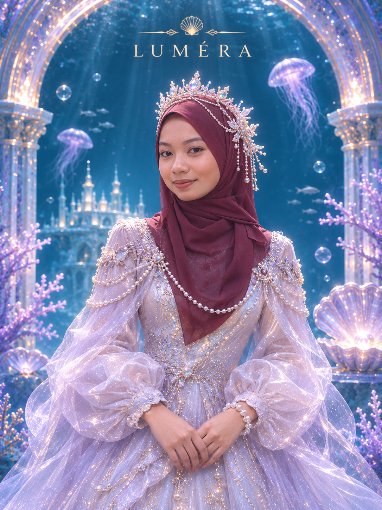

MEET THE CREATOR
The Founder.

FOUNDER / LEAD DEVELOPER
About Me
Full NameNURUL AINA ADIBAH BINTI ABDUL HALIM
Matric No.2025429078
Class GroupRCDCS2405A
About LUMÉRA
LUMÉRA is a fictional underwater adventure centre that offers unique and exciting experiences in mythical ocean worlds. Visitors can explore hidden kingdoms, glowing caves and magical underwater places. The website also provides a Service Estimator to help visitors calculate their estimated adventure cost.